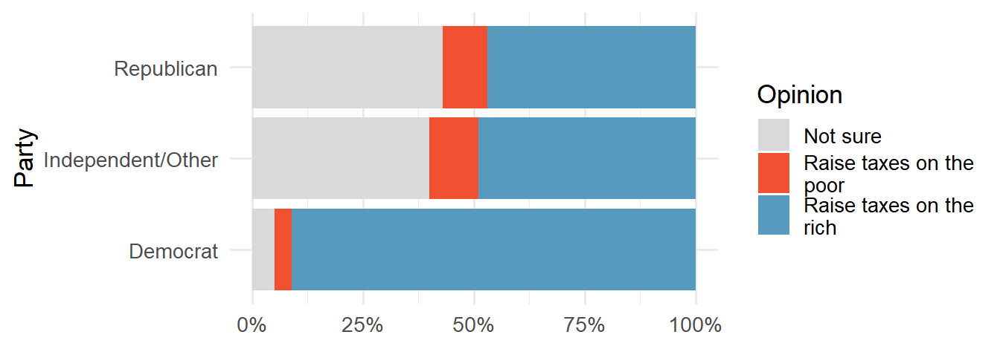
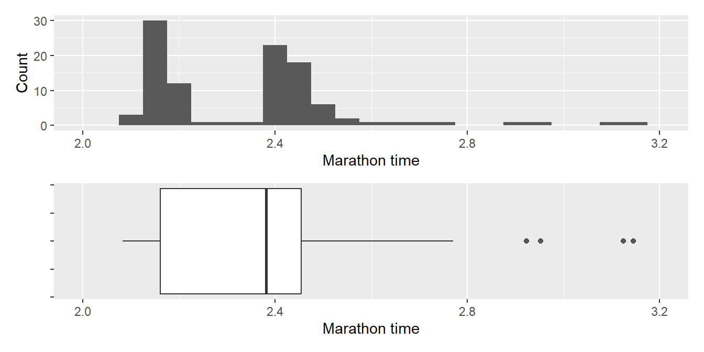
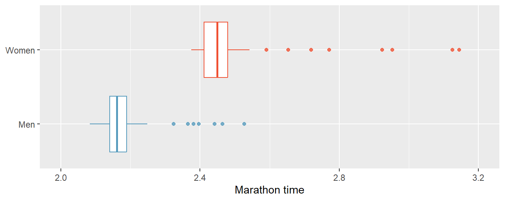
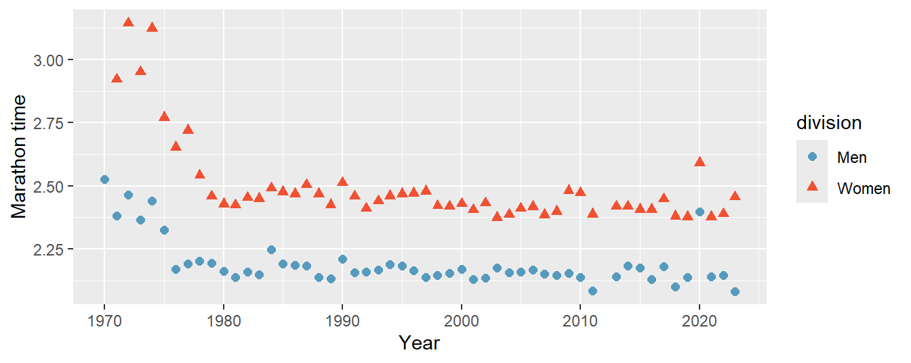

library(tidyverse)Lab 02
Descriptive Statistics
The goal of this lab is to effectively visualize data and create reproducible reports with Quarto.
For all visualizations you create, b sure to include informative titles for the plot, axes, and legend!
Packages
In this lab we will work with the tidyverse packages, which is a collection of packages for doing data analysis in a “tidy” way.
Part 1: Nobel laureates
The dataset for this lab can be found in the following link.
The descriptions of the variables are as follows:
id: ID numberfirstname: First name of laureatesurname: Surnameyear: Year prize woncategory: Category of prizeaffiliation: Affiliation of laureatecity: City of laureate in prize yearcountry: Country of laureate in prize yearborn_date: Birth date of laureatedied_date: Death date of laureategender: Gender of laureateborn_city: City where laureate was bornborn_country: Country where laureate was bornborn_country_code: Code of country where laureate was borndied_city: City where laureate dieddied_country: Country where laureate dieddied_country_code: Code of country where laureate diedoverall_motivation: Overall motivation for recognitionshare: Number of other winners award is shared withmotivation: Motivation for recognition
In a few cases the name of the city/country changed after laureate was given (e.g. in 1975 Bosnia and Herzegovina was called the Socialist Federative Republic of Yugoslavia). In these cases the variables below reflect a different name than their counterparts without the suffix _original.
born_country_original: Original country where laureate was bornborn_city_original: Original city where laureate was borndied_country_original: Original country where laureate dieddied_city_original: Original city where laureate diedcity_original: Original city where laureate lived at the time of winning the awardcountry_original: Original country where laureate lived at the time of winning the award
Exercise 1
How many observations and how many variables are in the dataset? Use inline code to answer this question. What does each row represent?
Exercise 2
There are some observations in this dataset that we will exclude from our analysis to match the Buzzfeed results.
Create a new data frame called nobel_living that filters for
- laureates for whom
countryis available:!is.na(country) - laureates who are people as opposed to organizations, i.e., organizations are denoted with
"org"as theirgender:gender != "org" - laureates who are still alive, i.e., their
died_dateisNA:is.na(died_date)
Confirm that once you have filtered for these characteristics you are left with a data frame with 228 observations, once again using inline code.
Most living Nobel laureates were based in the US when they won their prizes
… says the Buzzfeed article. Let’s see if that’s true.
First, we’ll create a new variable to identify whether the laureate was in the US when they won their prize. Mutates the nobel_living data frame by adding a new variable called country_us. Use an if statement to create this variable. If country is equal to "USA", we set country_us to "USA". If not, we set the country_us to "Other".
Next, we will limit our analysis to only the following categories: Physics, Medicine, Chemistry, and Economics. Create a new data frame called nobel_living_science that filters for these categories.
For the following borders, work with the nobel_living_science data frame you created above. This means you’ll need to define this data frame in your Quarto document, even though the next border doesn’t explicitly ask you to do so.
Exercise 3
Create a faceted bar plot visualizing the relationship between the category of prize and whether the laureate was in the US when they won the nobel prize. Interpret your visualization, and say a few words about whether the Buzzfeed headline is supported by the data.
- Your visualization should be faceted by category.
- For each facet you should have two bars, one for winners in the US and one for Other.
- Flip the coordinates so the bars are horizontal, not vertical.
Exercise 4
Next, let’s investigate, of those US-based Nobel laureates, what proportion were born in other countries.
Create a new variable called born_country_us in nobel_living_science that has the value "USA" if the laureate is born in the US, and "Other" otherwise. How many of the winners are born in the US?
Exercise 5
Add a second variable to your visualization from Exercise 3 based on whether the laureate was born in the US or not.
Create two visualizations with this new variable added:
- Plot 1: Segmented frequency bar plot
- Plot 2: Segmented relative frequency bar plot (Hint: Add
position = "fill"togeom_bar().)
Here are some instructions that apply to both of these visualizations:
- Your final visualization should contain a facet for each category.
- Within each facet, there should be two bars for whether the laureate won the award in the US or not.
- Each bar should have segments for whether the laureate was born in the US or not.
Which of these visualizations is a better fit for answering the following question: “Do the data appear to support Buzzfeed’s claim that of those US-based Nobel laureates, many were born in other countries?” First, state which plot you’re using to answer the question. Then, answer the question, explaining your reasoning in 1-2 sentences.
Exercise 6
In a single pipeline, filter the nobel_living_science data frame for laureates who won their prize in the US, but were born outside of the US, and then create a frequency table (with the count() function) for their birth country (born_country) and arrange the resulting data frame in descending order of number of observations for each country. Which country is the most common?
Part 2: IMS Exercises
The borders in this section do not require code. Make sure to answer the questions in full sentences.
Exercise 7
Raise taxes. A random sample of registered voters nationally were asked whether they think it’s better to raise taxes on the rich or raise taxes on the poor. The survey also collected information on the political party affiliation of the respondents.

Based on the stacked bar plot shown above, do views on raising taxes and political affiliation appear to be associated? Explain your reasoning.
Conjecture other possible variables that might explain the potential association between these two variables.
Exercise 8
Office productivity. Office productivity is relatively low when the employees feel no stress about their work or job security. However, high levels of stress can also lead to reduced employee productivity. Sketch a plot to represent the relationship between stress and productivity.
Exercise 9
Distributions and appropriate statistics. For each of the following, state whether you expect the distribution to be symmetric, right skewed, or left skewed. Also specify whether the mean or median would best represent a typical observation in the data, and whether the variability of observations would be best represented using the standard deviation or IQR. Explain your reasoning.
Number of pets per household.
Distance to work, i.e., number of miles between work and home.
Heights of adult males.
Age at death.
Exam grade on an easy test.
Exercise 10
NYC marathon winners. The histogram and box plots below show the distribution of finishing times for male and female (combined) winners of the New York City Marathon between 1970 and 2023.

What features of the distribution are apparent in the histogram and not the box plot? What features are apparent in the box plot but not in the histogram?
What may be the reason for the bimodal distribution? Explain.
Compare the distribution of marathon times for men and women based on the box plot shown below.

- The time series plot shown below is another way to look at these data. Describe what is visible in this plot but not in the others.

Wrap up
Submitting
Important
Before you proceed, first, make sure that you have updated the document YAML with your name! Then, render your document one last time, for good measure.
To submit your assignment to Moodle, follow these steps:
- Render your Quarto document to PDF/MS Word with next YAML header:
---
title: "Lab 2"
subtitle: "Descriptive Statistics"
author: "Your Name"
institute: Kyiv School of Economics
format: pdf # or docx
---- Upload pdf/docx and qmd files to the course Moodle page.
Grading
- Submission of Lab Report: A complete and accurate submission of the lab assignment in the required format (1 point).
- Understanding of Code and Correct Use of Methods: Evaluation of your understanding of the code you submit and the appropriateness of the methods used in your solution (2 point).
- Verbal Defense of the Lab: An oral explanation of your solution to verify your understanding of the concepts and methods used. You may be asked to explain the logic of your code, the interpretation of results, or to make minor modifications to your solution during the defense (2 point).